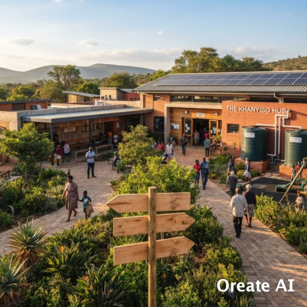
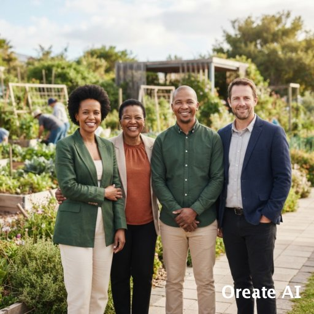

About Us
Our Origins
About the HavenRoots Foundation
Founded in 2021 during a period of economic hardship in local townships, HavenRoots began as a small, informal neighborhood
feeding initiative operating out of a local community hall. Observing that many children attending local schools were
coming on empty stomachs and lacked academic support after hours, the founders expanded operations. By late 2022, HavenRoots
officially registered as a non-profit organization. Today, it operates comprehensive youth development hubs, sustainable urban
food gardens, and emergency relief services across multiple communities.

Our Beginnings
HavenRoots was born out of a simple observation in 2021: while urban neighborhoods were facing rising heat levels and growing food
insecurity, local vacant lots sat empty and underutilized. What started as a small weekend initiative among neighbors in Johannesburg that aims to gather to clear rubbish,
plant native trees, and cultivate a modest vegetable patch that quickly reveales a deeper community need. It became clear that local residents didn't just
want greener spaces they wanted the skills, tools, and ownership to nurture their own environments. From that first handful of seeds
and shared vision, HavenRoots was established to turn grassroots care into lasting ecological stewardship.
Our Future
As we look ahead, HavenRoots is committed to deepening our impact and broadening our reach across regional corridors.
Our target for 2028 is to plant and maintain 25,000 indigenous trees, expand our support to over 50 organic community gardens,
and establish specialized youth eco-entrepreneurship incubators. Beyond environmental restoration, our future lies in amplifying
community voices that are using our Voices of HavenRoots platform to document local stories of resilience and inspire neighboring
communities to take root. We envision a future where every neighborhood possesses the ecological health, food security, and collective
pride needed to flourish independently for generations to come.
Our Brief History
Since our formal founding, HavenRoots has evolved from a neighborhood tree-planting group into an active community-led non-profit organization. In our first two years, we launched our flagship Urban Reforestation & Land Recovery program, converting dozens of neglected municipal plots into vibrant eco-hubs and indigenous nurseries. By 2024, we expanded our focus to youth empowerment, establishing structured agri-skills workshops that have equipped over 1,200 young adults with practical training in permaculture and sustainable nursery management. Today, with over 12,500 native trees planted and 34 community food gardens actively feeding local households, our journey reflects the quiet strength of community-driven action.
Team Members
| Role | Name | Primary Responsibilities |
|---|---|---|
| Executive Director & Co-Founder | Sipho Ndlovu | Strategic direction, stakeholder relations, and organizational development |
| Head of Youth Programs | Nompumelelo Khumalo | Curriculum design for after-school tutoring and mentorship oversight |
| Community Outreach & Operations Coordinator | Thabo Mokoena | Food security initiatives, volunteer coordination, and garden logistics |
| Finance & Compliance Officer | Michael Williams | Financial reporting, donor transparency, and grant compliance |
